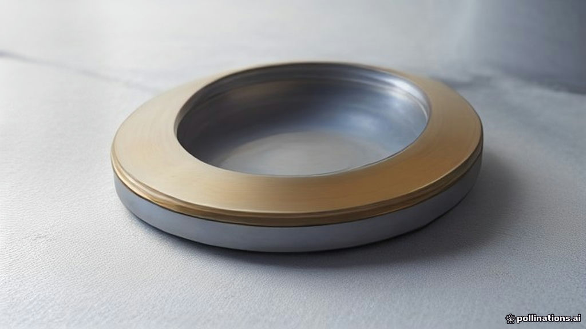

What India Buys and Sells: Understanding Our Current Account Deficit
TL;DR
- India's Current Account Deficit (CAD) measures if we are spending more on imports and other payments abroad than we earn from exports and money coming in.
- The latest official data showed India's CAD at $4.2 billion (0.5% of GDP) in Q1 FY2026-27 (April-June 2026).
- More recent monthly data showed the deficit narrowing slightly to $5.2 billion in August 2026.
- A major reason for the deficit is that India imports more goods like oil and electronics than it exports.
- Strong earnings from services exports (like IT) and money sent home by Indians abroad help reduce this deficit.
What's this about?
The Current Account Deficit (CAD) is like a country's financial report card with the rest of the world. It tells us if India is sending out more money than it is bringing in through trade, services, and other transfers. When we import more goods and services than we export, or when more money leaves the country for various reasons than comes in, we have a Current Account Deficit.
This deficit means that to pay for all the extra things we are buying or sending money for, we need to borrow from abroad or use our foreign exchange reserves. It's a key indicator of a country's economic health and its relationship with the global economy.
Why it's in the news right now
India's Current Account Deficit has been a frequent topic in economic discussions. The Reserve Bank of India (RBI) recently released data showing the CAD for the first quarter of the financial year 2026-27 (April-June 2026) stood at $4.2 billion, which is 0.5% of our Gross Domestic Product (GDP). This was an increase from $3.4 billion (0.4% of GDP) in the same quarter last year.
More recently, a report from The Times of India on October 15, 2026, highlighted that India's current account deficit narrowed slightly to $5.2 billion in August 2026, compared to $6.1 billion a year earlier. However, the cumulative deficit for April-August 2026 widened to $18.3 billion. Economic experts and rating agencies like ICRA, in a November 6, 2026 report, are also forecasting the CAD for the July-September 2026 quarter (Q2 FY2027) to be around 1.5% of GDP. These figures and forecasts keep the CAD in the news as economists and policymakers assess India's external economic position.
How it actually works
The Current Account Deficit is calculated by adding up four main components:
- Trade in Goods (Merchandise Trade): This is the biggest part. It's the difference between the value of all physical goods India exports (sells to other countries) and all physical goods it imports (buys from other countries). If India imports more goods like crude oil, electronics, and machinery than it exports items like textiles, gems, and pharmaceuticals, it leads to a trade deficit.
- Trade in Services: This includes the money earned from services India provides to other countries (like IT services, tourism, and consulting) minus the money paid for services imported from other countries. India usually has a services surplus, meaning we earn more from services than we spend, which helps offset the goods trade deficit.
- Primary Income: This involves income earned from investments abroad (like interest or dividends) by Indian residents, minus similar income paid to foreign residents for their investments in India. It also includes wages earned by Indians working abroad who send money home, and vice versa.
- Secondary Income (Transfers): This includes one-way transfers of money, like remittances (money sent by Non-Resident Indians or NRIs back home to their families), foreign aid, and grants. India typically receives a large amount of remittances, which significantly helps in reducing the CAD.
When the total of money flowing out (for imports, payments to foreign investors, etc.) is more than the total money flowing in (from exports, remittances, foreign investments earning, etc.), we have a Current Account Deficit. If it's the other way around, we have a Current Account Surplus.
A simple way to think about it
Imagine your household budget for a month.
- Your Salary/Income (Exports + Services Earnings + Remittances): This is the money you earn from your job, any freelance work you do, or money your relatives send you from abroad.
- Your Expenses (Imports): This is the money you spend on groceries, rent, petrol, new clothes, and all other things you buy.
- Your Household's Current Account: If your monthly expenses are more than your monthly income, you have a deficit. You might need to dip into your savings or borrow money from a friend to cover the gap. If your income is more than your expenses, you have a surplus, and you can save or invest the extra money.
India's CAD is just like this household deficit, but on a national scale. If the country is consistently spending more than it earns from the rest of the world, it needs to find ways to finance that gap.
Why it matters to you
- Impact on the Rupee: A widening CAD often puts pressure on the Indian Rupee (₹). When India needs more foreign currency (like US dollars) to pay for its imports than it earns from exports, the demand for foreign currency goes up. This can make the rupee weaker against major currencies, meaning you might need more rupees to buy one dollar.
- Cost of Imports: If the rupee weakens, imported goods become more expensive. This includes things like crude oil (which impacts petrol and diesel prices), electronics, and many raw materials used by Indian factories. This can lead to higher prices for everyday items you buy.
- Inflation: The increased cost of imports due to a weaker rupee can contribute to overall inflation, making your grocery bills and other expenses higher.
- Foreign Investment and Jobs: A large and persistent CAD can sometimes make foreign investors hesitant to invest in India, as it signals potential economic instability. If foreign investment (FDI - Foreign Direct Investment and FPI - Foreign Portfolio Investment) slows down, it can affect job creation and economic growth.
- Government Policy: The government and the RBI closely watch the CAD. If it becomes too large, they might take steps like trying to boost exports, curb non-essential imports, or attract more foreign investment. These policies can indirectly affect businesses and consumers.
Common confusions cleared up
- Myth: A Current Account Deficit is always bad for the economy.
* Fact: Not necessarily. A moderate CAD can be healthy, especially for a developing economy like India that needs to import capital goods (machinery, technology) to grow its industries. It only becomes a concern if it's very large, persistent, and difficult to finance.
- Myth: The Current Account Deficit is the same as the government's budget deficit.
Fact: These are different. The Current Account Deficit deals with a country's financial transactions with the rest of the world. The government's budget deficit (or fiscal deficit) deals with the difference between the government's income (taxes) and its expenditure* within the country.
- Myth: If India has a CAD, it means the country is running out of money.
* Fact: A CAD means more foreign currency is leaving the country than entering through regular transactions. The country can finance this deficit by attracting foreign investments (like FDI or FPI) or by using its foreign exchange reserves. It doesn't mean the country is "running out of money" directly, but a consistently high and unfunded CAD can put a strain on its reserves and currency.
FAQ
What is a "sustainable" level for India's Current Account Deficit?
Economists generally consider a CAD of around 2-2.5% of GDP as manageable for India, as it can typically be financed by stable capital inflows like foreign direct investment.
How does a high CAD affect the stock market?
A persistently high CAD can sometimes make foreign investors cautious, potentially leading to outflows of foreign portfolio investment (FPI), which can put downward pressure on the stock market.
What are "foreign exchange reserves"?
Foreign exchange reserves are assets held by the central bank (RBI in India) in foreign currencies. They act as a buffer to manage the rupee's value and finance the CAD when needed. India's forex reserves stood at $717 billion as of October 30, 2026.
Does a strong services sector always help the CAD?
Yes, India's strong services exports, particularly in IT, consistently generate a significant surplus which helps offset the deficit from goods trade, thereby keeping the overall CAD lower than it would otherwise be.
What is the difference between CAD and Balance of Payments (BoP)?
The Current Account is one part of the broader Balance of Payments (BoP). The BoP is a complete record of all economic transactions between a country and the rest of the world, including both the Current Account and the Capital Account (which tracks investments and loans). India recorded an overall BoP surplus of $58 billion during April-August 2026.
Sources
- Reserve Bank of India. "Governor's Statement, October 7, 2026."
- Trading Economics. "India Current Account." Updated November 2026.
- The Economic Times. "India's investment outlook strengthens as credit, exports rebound; inflation relief likely: HSBC." Published November 9, 2026.
- The Times of India. "India Balance Of Payments: India's current account deficit narrows to $5.2 billion in August, RBI data shows." Published October 15, 2026.
- ICRA. "India's goods trade deficit cooled in August 2026; expect CAD to print at ~1.5% of GDP in Q2 FY2027." Published November 6, 2026.
- ET CFO. "India's investment outlook strengthens as credit, exports rebound; inflation relief likely: HSBC." Published November 10, 2026.
- Dun & Bradstreet India. "Q2 2026."
- The Economic Times. "India posts $2 billion current account deficit in May as trade gap widens." Published July 15, 2026.